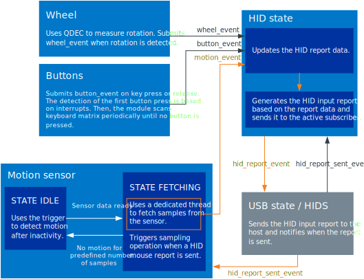
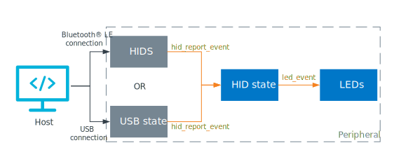
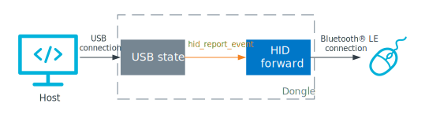

The nRF Desktop is a reference design of a Human Interface Device (HID) that is connected to a host through Bluetooth® Low Energy or USB, or both.
Depending on the configuration, this application can work as desktop mouse, gaming mouse, keyboard, or connection dongle.
See nRF Desktop reference design page for an overview of supported features.
Tip
To get started with hardware that has pre-configured software, go to the User interface section.
The nRF Desktop application supports common input hardware interfaces like motion sensors, rotation sensors, and buttons scanning module.
You can configure the firmware at runtime using a dedicated configuration channel established with the HID feature report.
The same channel is used to transmit DFU packets.
The nRF Desktop application design aims at high performance, while still providing configurability and extensibility.
The application architecture is modular, event-driven and build around Common Application Framework.
This means that parts of the application functionality are separated into isolated modules that communicate with each other using application events, which are handled by the Application Event Manager.
Modules register themselves as listeners of those events that they are configured to react to.
An application event can be submitted by multiple modules and it can have multiple listeners.
The following figure shows the nRF Desktop modules and how they relate with other components and the Application Event Manager.
The figure does not present all the available modules.
For example, the figure does not include the modules that are used as hotfixes or only for debug or profiling purposes.
Each module event table contains the following columns:
Source Module
The module that submits a given application event.
Some of these events can have many listeners or sources.
These are listed on the Source and sink module lists page.
Input Event
An application event that is received by the module described by the table.
This Module
The module described by the table.
This is the module that is the target of the Input Events and the source of Output Events directed to the Sink Modules.
Output Event
An application event that is submitted by the module described by the table.
Sink Module
The module that reacts on the application event.
Some of these events can have many listeners or sources.
These are listed on the Source and sink module lists page.
Note
Some application modules can have multiple implementations (for example, Motion module).
In such case, the table shows the Application Event Manager events received and submitted by all implementations of a given application module.
Since the application architecture is uniform and the code is shared, the set of modules in use depends on the selected device role.
A different set of modules is enabled when the application is working as mouse, keyboard, or dongle.
In other words, not all of the Application internal modules need to be enabled for a given reference design.
The application limits the number of threads in use to the minimum and does not use the user-space threads.
The following threads are kept running in the application:
System-related threads
Idle thread
System workqueue thread
Logger thread (when zephyr:logging_api is enabled)
Shell thread (when zephyr:shell_api is enabled)
Threads related to Bluetooth® LE (the exact number depends on the selected Link Layer)
Application-related threads
Motion sensor thread (running only on mouse)
Settings loading thread (enabled by default only on keyboard)
QoS data sampling thread (running only if Bluetooth® LE QoS feature is enabled)
Most of the application activity takes place in the context of the system work queue thread, either through scheduled work objects or through the Application Event Manager callbacks (executed from the system workqueue thread).
Because of this, the application does not need to handle resource protection.
The only exception are places where the interaction with interrupts or multiple threads cannot be avoided.
Most of memory resources that are used by the application are allocated statically.
The application uses dynamic allocation to:
Create the Application Event Manager events.
For more information, see the Application Event Manager page.
Temporarily store the HID-related data in the HID state module and HID forward module.
For more information, see the documentation pages of these modules.
When configuring HEAP, make sure that the values for the following options match the typical event size and the system needs:
CONFIG_HEAP_MEM_POOL_SIZE - The size must be big enough to handle the worst possible use case for the given device.
Important
The nRF Desktop uses k_heap as the backend for dynamic allocation.
This backend is used by default in Zephyr.
For more information, refer to Zephyr’s documentation about zephyr:heap_v2.
The nRF Desktop application uses HID input reports to transmit information about user input from the nRF Desktop device to a host.
The user input can be, for example, button press or mouse motion.
The nRF Desktop supports the following HID input reports:
HID mouse report
HID keyboard report
HID consumer control report
HID system control report
Every of these reports uses predefined report format and provides the given information.
For example, the mouse motion is forwarded as HID mouse report.
An nRF Desktop device supports the selected subset of the HID input reports.
For example, the nRF Desktop keyboard reference design (nrf52kbd_nrf52832) supports HID keyboard report, HID consumer control report and HID system control report.
As an example, the following section describes handling HID mouse report data.
The nRF Desktop mouse sends HID input reports to the host after the host connects and subscribes for the HID reports.
The Motion module sensor sampling is synchronized with sending the HID mouse input reports to the host.
The Wheel module and CAF: Buttons module provide data to the HID state module when the mouse wheel is used or a button is pressed, respectively.
These inputs are not synchronized with the HID report transmission to the host.
When the mouse is constantly in use, the motion module is kept in the fetching state.
In this state, the nRF Desktop mouse forwards the data from the motion sensor to the host in the following way:
USB state (or Bluetooth HIDS) sends a HID mouse report to the host and submits hid_report_sent_event.
The event triggers sampling of the motion sensor.
A dedicated thread is used to fetch the sample from the sensor.
After the sample is fetched, the thread forwards it to the HID state module as motion_event.
The HID state module updates the HID report data, generates new HID input report, and submits it as hid_report_event.
The HID report data is forwarded to the host either by the USB state module or by the HID Service module.
The USB state has precedence if the USB is connected.
When the HID input report is sent to the host, hid_report_sent_event is submitted.
The motion sensor sample is triggered and the sequence repeats.
If the device is connected through Bluetooth, the HID state module uses a pipeline that consists of two HID reports, which it creates upon receiving the first motion_event.
The HID state module submits two hid_report_event events.
Sending the first event to the host triggers the motion sensor sample.
For the Bluetooth connections, submitting hid_report_sent_event is delayed by one Bluetooth connection interval.
Because of this delay, the HID Service module requires pipeline of two HID reports to make sure that data is sent on every connection event.
Such solution is necessary to achieve high report rate.
If there is no motion data for the predefined number of samples, the Motion module goes to the idle state.
This is done to reduce the power consumption.
When a motion is detected, the module switches back to the fetching state.
The following diagram shows the data exchange between the application modules.
To keep it simple, the diagram only shows data related to HID input reports that are sent after the host is connected and the HID subscriptions are enabled.

nRF Desktop mouse HID data sensing and transmission
HID output reports are used to transmit data from host to an nRF Desktop device.
The nRF Desktop supports the HID keyboard LED report.
The report is used by the host to update the state of the keyboard LEDs, for example to indicate that the Caps Lock key is active.
Note
Only the nrf52840dk_nrf52840 in keyboard configuration has hardware LEDs that can be used to display the Caps Lock and Num Lock state.
The following diagrams show the HID output report data exchange between the application modules.
Scenario 1: Peripheral connected directly to the host

HID output report: Data handling and transmission between host and peripheral
In this scenario, the HID output report is sent from the host to the peripheral either through Bluetooth or the USB connection.
Depending on the connection, the HID report is received by the HID Service module or USB state module, respectively.
The module then sends the HID output report as hid_report_event to the HID state module, which keeps track of the HID output report states and updates state of the hardware LEDs by sending led_event to LEDs module.
Scenario 2: Dongle intermediates between the host and the peripheral

HID output report: Data handling and transmission between host and peripheral through dongle
In this scenario, the HID output report is sent from the host to the dongle using the USB connection and is received by the USB state module.
The destination module then sends the HID output report as hid_report_event to the HID forward module, which sends it to the peripheral using Bluetooth.
HID feature reports are used to transmit data between the host and an nRF Desktop device (in both directions).
The nRF Desktop uses only one HID feature report: the user config report.
The report is used by the Configuration channel.
Note
The nRF Desktop also uses a dedicated HID output report to forward the Configuration channel data through the nRF Desktop dongle.
This report is handled using the configuration channel’s infrastructure and it can be enabled using CONFIG_DESKTOP_CONFIG_CHANNEL_OUT_REPORT.
See the Kconfig option’s help for details about the report.
The following HID protocols are supported by nRF Desktop for HID input reports and HID output reports:
Report protocol - Most widely used in HID devices.
When establishing connection, host reads a HID descriptor from the HID device.
HID descriptor describes format of HID reports and is used by the host to interpret data exchanged between HID device and host.
Boot protocol - Only available for mice and keyboards data.
No HID descriptor is used for this HID protocol.
Instead, fixed data packet formats must be used to send data between the HID device and the host.
The nRF Desktop application supports several development kits related to the following hardware reference designs.
Depending on what development kit you use, you need to select the respective configuration file and build type.
In nRF52840 DK, the application is configured to work as gaming mouse (with motion emulated by using DK buttons) and in nRF52833 DK, the application is configured to work as HID dongle.
The nRF Desktop does not use a single prj.conf file.
Configuration files are provided for different build types for each supported board.
Each board has its own prj.conf file, which represents a debug build type.
Other build types are covered by dedicated files with the build type added as a suffix to the prj part, as per the following list.
For example, the release build type file name is prj_release.conf.
If a board has other configuration files, for example associated with partition layout or child image configuration, these follow the same pattern.
When the CONF_FILE variable contains a single file and this file follows the naming pattern prj_<buildtype>.conf, then the build type will be inferred to be <buildtype>.
The build type cannot be set explicitly.
The <buildtype> can be any string, but it is common to use release and debug.
For information about how to set variables, see zephyr:important-build-vars in the Zephyr documentation.
The Partition Manager’s static configuration can also be made dependent on the build type.
When the build type has been inferred, the file pm_static_<buildtype>.yml will have precedence over pm_static.yml.
The child image Kconfig configuration can also be made dependent on the build type.
The child image Kconfig overlay file is named child_image/<child_image_name>.conf instead of prj.conf, but otherwise follows the same pattern as the parent Kconfig.
Alternatively, the child image Kconfig configuration file can be introduced as child_image/<child_image_name>/prj.conf and follow the same pattern as the parent Kconfig.
For example, child_image/mcuboot/prj_release.conf can be used to define release build type for mcuboot child image.
Note
Selecting a build type is optional.
The debug build type is used by default in nRF Desktop if no build type is explicitly selected.
The following build types are available for various boards in the nRF Desktop:
In nRF Desktop, not every development kit can support every build type mentioned above.
If the given build type is not supported on the selected DK, an error message will appear when Building and running.
For example, if the wwcb build type is not supported on the selected DK, the following notification appears:
File not found: ./ncs/nrf/applications/nrf_desktop/configuration/nrf52dmouse_nrf52832/prj_wwcb.conf
In addition to these build types, some boards can have additional build type configurations that you can use to generate an application in a specific variant.
Such board-specific configurations use dedicated prj_*build_type*.conf files, where the name of the configuration replaces the *build_type* part in the file name.
Given the potential number of such configurations, they are not listed above and you can read the description of each of them in the respective configuration file.
For example, the nRF52840 Development Kit supports the keyboard configuration, which is defined in the prj_keyboard.conf file in the configuration/nrf52840dk_nrf52840 directory.
This configuration lets you generate the application with the keyboard role.
See Integrating your own hardware for detailed information about the application configuration and how to create build type files for your hardware.
The nRF Desktop configuration files have a set of preprogrammed options bound to different parts of the hardware.
These options are related to the functionalities discussed in this section.
The nRF Desktop hardware reference designs are equipped with hardware switches to turn the device on and off.
See the following figures for the exact location of these switches:
The switch is located at the bottom of the gaming mouse, close to the optical sensor.
The mouse uses this switch also for changing dongle and Bluetooth LE peers, as described in the Bluetooth LE peer control section.
The switch is located at the bottom of the desktop mouse, close to the optical sensor.
The switch is located at the back of the keyboard.
The nRF Desktop devices provide user input to the host in the same way as other mice and keyboards, using connection through USB or Bluetooth LE.
The nRF Desktop devices support additional operations, like firmware upgrade or configuration change.
The support is implemented through the Configuration channel.
The host can use dedicated Python scripts to exchange the data with an nRF Desktop peripheral.
For detailed information, see HID configurator for nRF Desktop.
To save power, the behavior of a device can change in time.
For more information, see the Power management section.
The gaming mouse can send HID data when connected through USB.
When the device is connected both wirelessly and through USB at the same time, it provides input only through the USB connection.
If the device is disconnected from USB, it automatically switches to sending the data wirelessly using Bluetooth LE.
The gaming mouse is a battery-powered device.
When it is connected through USB, charging of the rechargeable batteries starts.
The nRF Desktop dongle works as a bridge between the devices connected through standard Bluetooth® Low Energy or Low Latency Packet Mode and the host connected through USB.
It receives data wirelessly from the connected peripherals and forwards the data to the host.
The nRF Desktop dongle is powered directly through USB.
The DK functionality depends on the application configuration.
Depending on the selected configuration options, it can work as a mouse, keyboard, or a dongle.
When turned on, the nRF Desktop peripherals are advertising until they go to the suspended state or connect through Bluetooth.
The peripheral supports one wireless connection at a time, but it can be bonded with multiple peers.
Note
To simplify pairing the nRF Desktop peripherals with Windows 10 hosts, the peripherals include Swift Pair payload in the Bluetooth LE advertising data.
Some of the nRF Desktop configurations also include Fast Pair payload in the Bluetooth LE advertising data to simplify pairing the nRF Desktop peripherals with Android hosts.
These configurations apply further modifications that are needed to improve the user experience.
See the Fast Pair documentation section for details.
The nRF Desktop Bluetooth Central device scans for all bonded peripherals that are not connected.
The scanning is interrupted when any device connected to the dongle through Bluetooth comes in use.
Continuing the scanning in such scenario would cause report rate drop.
The scanning starts automatically when one of the bonded peers disconnects.
It also takes place periodically when a known peer is not connected.
The peripheral connection can be based on standard Bluetooth LE connection parameters or on Bluetooth LE with Low Latency Packet Mode (LLPM).
LLPM is a proprietary Bluetooth extension from Nordic Semiconductor.
It can be used only if it is supported by both connected devices (desktop mice do not support it).
LLPM enables sending data with high report rate (up to 1000 reports per second), which is not supported by the standard Bluetooth LE.
A connected Bluetooth LE peer device can be controlled using predefined buttons or button combinations.
There are several peer operations available.
The application distinguishes between the following button press types:
Short - Button pressed for less than 0.5 seconds.
Standard - Button pressed for more than 0.5 seconds, but less than 5 seconds.
Long - Button pressed for more than 5 seconds.
Double - Button pressed twice in quick succession.
The peer operation states provide visual feedback through LEDs (if the device has LEDs).
Each of the states is represented by separate LED color and effect.
The LED colors and effects are described in the led_state_def.h file located in the board-specific directory in the application configuration directory.
The assignments of hardware interface elements depend on the device type.
The following predefined hardware interface elements are assigned to peer control operations for the gaming mouse:
Short-press to initialize the peer selection.
(The LED1 changes color and starts blinking.)
During the peer selection:
Short-press to toggle between available peers.
The LED1 changes color for each peer and keeps blinking.
Double-press to confirm the peer selection.
The peer is changed after the confirmation.
LED1 stops blinking.
Note
A breathing LED indicates that the device has entered either scanning or advertising mode.
This happens when the device is looking for a peer to connect to.
Long-press to initialize the peer erase.
When LED1 starts blinking rapidly, double-press to confirm the operation.
After the confirmation, Bluetooth advertising using a new local identity is started.
When a new Bluetooth Central device successfully connects and bonds, the old bond is removed and the new bond is used instead.
If the new peer does not connect in the predefined period of time, the advertising ends and the application switches back to the old peer.
You can cancel the ongoing peer operation with a standard button press.
The following predefined buttons are assigned to peer control operations for the desktop mouse:
Scroll wheel button
Press the scroll wheel before the mouse is powered up with the on/off switch.
Long-press to initialize and confirm the peer erase.
After the confirmation, Bluetooth advertising using a new local identity is started.
When a new Bluetooth Central device successfully connects and bonds, the old bond is removed and the new bond is used instead.
If the new peer does not connect in the predefined period of time, the advertising ends and the application switches back to the old peer.
You can cancel the ongoing peer operation with a standard button press.
The following predefined buttons or button combinations are assigned to peer control operations for the keyboard:
Page Down key
Press the Page Down key while keeping the Fn modifier key pressed.
Short-press the Page Down key to initialize the peer selection.
During the peer selection:
Short-press to toggle between available peers.
LED1 blinks rapidly for each peer.
The amount of blinks corresponds to the number assigned to a peer: one blink for peer 1, two blinks for peer 2, and so on.
Double-press to confirm the peer selection.
The peer is changed after the confirmation.
LED1 becomes solid for a short time and then turns itself off.
Note
A breathing LED indicates that the device has entered either scanning or advertising mode.
This happens when the device is looking for a peer to connect to.
Long-press to initialize the peer erase.
When LED1 starts blinking rapidly, double-press to confirm the operation.
After the confirmation, Bluetooth advertising using a new local identity is started.
When a new Bluetooth Central device successfully connects and bonds, the old bond is removed and the new bond is used instead.
If the new peer does not connect in the predefined period of time, the advertising ends and the application switches back to the old peer.
You can cancel the ongoing peer operation with a standard button press.
The following predefined buttons are assigned to peer control operations for the HID dongle:
SW1 button
The SW1 button is located on the top of the dongle, on the same side as LED2.
Long-press to initialize peer erase.
When LED2 starts blinking rapidly, double-press to confirm the operation.
After the confirmation, all the Bluetooth bonds are removed for the dongle.
Short-press to start scanning for both bonded and non-bonded Bluetooth Peripherals.
The scan is interrupted if another peripheral connected to the dongle is in use.
Note
A breathing LED indicates that the device has entered either scanning or advertising mode.
This happens when the device is looking for a peer to connect to.
You can cancel the ongoing peer operation with a standard button press.
When available, one of the LEDs is used to indicate the state of the device.
This system state LED is kept on when the device is active.
The system state LED of the gaming mouse is located under the transparent section of the cover.
The color of the LED changes when the device’s battery is being charged.
LED1 is used for the system state indication.
It is located in the bottom right corner of the dongle, next to the USB connector.
In case of a system error, the system state LED will start to blink rapidly for some time before the device is reset.
Each of the nRF Desktop hardware reference designs has a slot for the dedicated debug board.
See the following figures for the exact location of these slots.
The debug slot is located at the end of the gaming mouse, below the cover.
The debug slot is located on the side of the desktop mouse.
It is accesible through a hole in the casing.
The debug slot is located on the back of the keyboard.
The boards that you can plug into these slots are shown below.
The debug board can be used for programming the device (and powering it).
The bypass boards are needed to make the device work when the debug board is not used.
Their purpose is to close the circuits, which allows the device to be powered, for example during Testing.
The device can be programmed using the J-Link.
The J-Link connector slot is located on the top of the debug board.
The shorter nRF desktop bypass board can be used with the desktop mouse.
The longer nRF desktop bypass board can be used with the gaming mouse.
Reducing power consumption is important for every battery-powered device.
The nRF Desktop peripherals are either suspended or powered off when they are not in use for a defined amount of time:
In the suspended state, the device maintains the active connection.
In the powered off state, the CPU is switched to the off mode.
In both cases, most of the functionalities are disabled.
For example, LEDs are turned off and advertising is stopped.
Moving the mouse or pressing any button wakes up the device and turns on the disabled functionalities.
You can define the amount of time after which the peripherals are suspended or powered off in CONFIG_CAF_POWER_MANAGER_TIMEOUT.
By default, this period is set to 120 seconds.
Important
When the gaming mouse is powered from USB, the power down timeout functionality is disabled.
If a nRF Desktop device supports remote wakeup, the USB connected device goes to suspended state when USB is suspended.
The device can then trigger remote wakeup of the connected host on user input.
The nRF Desktop application can be used with the nRF21540 EK shield, an RF front-end module (FEM) for the 2.4 GHz range extension.
The shield can be used with any nRF Desktop HID application configured for a development kit that is fitted with Arduino-compatible connector (see the DK tab in Requirements).
This means that the shield support is not available for nRF Desktop’s dedicated boards, such as nrf52840gmouse_nrf52840, nrf52kbd_nrf52832, or nrf52840dongle_nrf52840.
To build the application with the shield support, pass the SHIELD parameter to the build command.
For detailed information about building the nRF Desktop application for the nRF21540 EK, see the Programming section on the nRF21540 EK documentation page.
Note
For the multi-core build, use the hci_rpmsg_ as the childImageName parameter, because in the nRF Desktop application, network core runs using hci_rpmsg_.
The command would look as follows:
west build -b nrf5340dk_nrf5340_cpuapp -- -DSHIELD=nrf21540_ek -Dhci_rpmsg_SHIELD=nrf21540_ek
To select the build type in the nRF Connect for VS Code extension:
When building an application as described in the nRF Connect for VS Code extension documentation, follow the steps for setting up the build configuration.
In the Add Build Configuration screen, select the desired .conf file from the Configuration drop-down menu.
Fill in other configuration options, if applicable, and click Build Configuration.
To select the build type when building the application from command line, specify the build type by adding the following parameter to the westbuild command:
-- -DCONF_FILE=prj_selected_build_type.conf
For example, you can replace the selected_build_type variable to build the release firmware for nrf52840dk_nrf52840 by running the following command in the project directory:
The build_nrf52840dk_nrf52840 parameter specifies the output directory for the build files.
Note
If nRF Desktop is built with Fast Pair support, you must provide your own Fast Pair Model ID and Anti Spoofing private key as CMake options.
See Provisioning the device documentation for the following information:
Registering a Fast Pair Provider
Provisioning a Fast Pair Provider in nRF Connect SDK
The application can be built and tested in various configurations.
The following procedure refers to the scenario where the gaming mouse (nRF52840 Gaming Mouse) and the keyboard (nRF52832 Desktop Keyboard) are connected simultaneously to the dongle (nRF52840 USB Dongle).
After building the application with or without specifying the build type, test the nRF Desktop application by performing the following steps:
Turn on both mouse and keyboard.
LED1 on the keyboard and LED1 on the mouse start breathing.
Plug the dongle to the USB port.
The blue LED2 on the dongle starts breathing.
This indicates that the dongle is scanning for peripherals.
Wait for the establishment of the Bluetooth connection, which happens automatically.
After the Bluetooth connection is established, the LEDs stop breathing and remain turned on.
The devices can then be used simultaneously.
Note
You can manually start the scanning for new peripheral devices by pressing the SW1 button on the dongle for a short time.
This might be needed if the dongle does not connect with all the peripherals before timeout.
The scanning is interrupted after the amount of time predefined in CONFIG_DESKTOP_BLE_SCAN_DURATION_S, because it negatively affects the performance of already connected peripherals.
Move the mouse and press any key on the keyboard.
The input is reflected on the host.
Note
When a configuration with debug features is enabled, for example logger and assertions, the gaming mouse report rate can be significantly lower.
Make sure that you use the release configurations before testing the mouse report rate.
For the release configurations, you should observe a 500-Hz report rate when both the mouse and the keyboard are connected and a 1000-Hz rate when only the mouse is connected.
Switch the Bluetooth peer on the gaming mouse by pressing the Precise Aim button (see User interface).
The color of LED1 changes from red to green and the LED starts blinking rapidly.
Press the Precise Aim button twice quickly to confirm the selection.
After the confirmation, LED1 starts breathing and the mouse starts the Bluetooth advertising.
Connect to the mouse with an Android phone, a laptop, or any other Bluetooth Central.
After the connection is established and the device is bonded, you can use the mouse with the connected device.
The nRF Desktop devices have passed the tests from official playlist required for compatibility with Windows 10 by Windows Hardware Compatibility Program (HLKVersion1903CompatPlaylistx86x64ARM64.xml).
The tests were conducted using Windows Hardware Lab Kit.
This section describes how to adapt the nRF Desktop application to different hardware.
It describes the configuration sources that are used for the default configuration, and lists steps required for adding a new board.
The nRF Desktop application uses the following files as configuration sources:
Devicetree Specification (DTS) files - These reflect the hardware configuration.
See zephyr:dt-guide for more information about the DTS data structure.
_def files - These contain configuration arrays for the application modules and are specific to the nRF Desktop application.
Kconfig files - These reflect the software configuration.
See kconfig_tips_and_tricks for information about how to configure them.
For information about differences between DTS and Kconfig, see zephyr:dt_vs_kconfig.
The nRF Desktop introduces Kconfig options that can be used to simplify an application configuration.
These options can be used to select a device role and to automatically apply a default configuration suitable for the selected role.
Note
Part of the default configuration is applied by modifying the default values of Kconfig options.
Changing configuration in menuconfig does not automatically adjust user-configurable values to the new defaults.
So, you must update those values manually.
For more information, see the Stuck symbols in menuconfig and guiconfig section on the kconfig_tips_and_tricks in the Zephyr documentation.
The default Kconfig option values are automatically updated if configuration changes are applied directly in the configuration files.
The nRF Desktop application introduces application-specific configuration options related to HID device configuration.
These options are defined in Kconfig.hid.
Each role automatically implies nRF Desktop modules needed for the role.
For example, HID state module is automatically enabled for the HID peripheral role.
By default, the nRF Desktop devices use predefined format of HID reports.
The common HID report map is defined in the configuration/common/hid_report_desc.c file.
The selected role implies a set of related HID reports.
For example, HID mouse automatically enables support for HID mouse report.
If otherHIDdevice peripheral type is chosen, the set of HID reports needs to be explicitly defined in the configuration.
Apart from this, the supported HID boot protocol interface can be specified as either:
The nRF Desktop application introduces application-specific configuration options related to the debug configuration.
These options are defined in the Kconfig.debug file.
The CONFIG_DESKTOP_LOG Kconfig option enables support for logging in the nRF Desktop application.
This option overlays Kconfig option defaults from the Logging subsystem to align them with the nRF Desktop requirements.
The nRF Desktop configuration uses SEGGER J-Link RTT as the Logging subsystem backend.
The CONFIG_DESKTOP_SHELL Kconfig option enables support for CLI in the nRF Desktop application.
This option overlays Kconfig option defaults from the Shell subsystem to align them with the nRF Desktop requirements.
The nRF Desktop configuration uses SEGGER J-Link RTT as the Shell subsystem backend.
If both shell and logging are enabled, logger uses shell as the logging backend.
The nRF Desktop application introduces application-specific configuration options related to Bluetooth connectivity configuration.
These options are defined in Kconfig.ble file.
The CONFIG_DESKTOP_BT Kconfig option enables support for Bluetooth connectivity in the nRF Desktop application.
The option is enabled by default.
The nRF Desktop application overlays defaults of the Common Application Framework related Kconfig options to align them with the nRF Desktop use-case.
The files that apply the overlays are located in the src/modules directory and are named Kconfig.caf_module_name.default.
For example, the Kconfig defaults of CAF: Settings loader module are overlayed in the src/modules/Kconfig.caf_settings_loader.default.
The nRF Desktop application is modular.
Depending on requested functions, it can provide mouse, keyboard, or dongle functionality.
The selection of modules depends on the chosen role and also on the selected reference design.
For more information about modules available for each configuration, see Overview: Firmware architecture.
For a board to be supported by the application, you must provide a set of configuration files at applications/nrf_desktop/configuration/your_board_name.
The application configuration files define both a set of options with which the nRF Desktop application will be created for your board and the selected nRF Desktop build types.
Include the following files in this directory:
Mandatory configuration files
Application configuration file for the debug (prj.conf) build type.
Configuration files for the selected modules.
Optional configuration files
Application configuration files for other build types.
The nRF Desktop application comes with configuration files for the following reference designs:
nRF52840 Gaming Mouse (nrf52840gmouse_nrf52840)
The reference design is defined in nrf/boards/arm/nrf52840gmouse_nrf52840 for the project-specific hardware.
To achieve gaming-grade performance:
The application is configured to act as a gaming mouse, with both Bluetooth LE and USB transports enabled.
Bluetooth is configured to use Nordic’s SoftDevice link layer.
The configuration with the B0 bootloader is set as default.
The board supports debug Fast Pair configuration (prj_fast_pair.conf).
nRF52832 Desktop Mouse (nrf52dmouse_nrf52832) and nRF52810 Desktop Mouse (nrf52810dmouse_nrf52810)
Both reference designs are meant for the project-specific hardware and are defined in nrf/boards/arm/nrf52dmouse_nrf52832 and nrf/boards/arm/nrf52810dmouse_nrf52810, respectively.
The application is configured to act as a mouse.
Only the Bluetooth LE transport is enabled.
Bluetooth uses either Zephyr’s software link layer (nrf52810dmouse_nrf52810) or Nordic’s SoftDevice link layer (nrf52dmouse_nrf52832).
The preconfigured build types for both nrf52dmouse_nrf52832 and nrf52810dmouse_nrf52810 boards are without the bootloader due to memory size limits on nrf52810dmouse_nrf52810 board.
Sample mouse, keyboard or dongle (nrf52840dk_nrf52840)
The configuration uses the nRF52840 Development Kit.
The build types allow to build the application as mouse, keyboard or dongle.
Inputs are simulated based on the hardware button presses.
The configuration with the B0 bootloader is set as default.
The board supports debug Fast Pair configuration that acts as a mouse (prj_fast_pair.conf).
Sample dongle (nrf52833dk_nrf52833)
The configuration uses the nRF52833 Development Kit.
The application is configured to act as a dongle that forwards data from both mouse and keyboard.
Bluetooth uses Nordic’s SoftDevice link layer and is configured to act as a central.
Input data comes from Bluetooth and is retransmitted to USB.
The configuration with the MCUboot bootloader is set as default.
Sample dongle (nrf52833dk_nrf52820)
The configuration uses the nRF52820 emulation on the nRF52833 Development Kit.
The application is configured to act as a dongle that forwards data from both mouse and keyboard.
Bluetooth uses Zephyr’s software link layer and is configured to act as a central.
Input data comes from Bluetooth and is retransmitted to USB.
The preconfigured build types configure the device without the bootloader in debug mode and with MCUboot bootloader in release mode due to memory size limits.
nRF52832 Desktop Keyboard (nrf52kbd_nrf52832)
The reference design used is defined in nrf/boards/arm/nrf52kbd_nrf52832 for the project-specific hardware.
The application is configured to act as a keyboard, with the Bluetooth LE transport enabled.
Bluetooth is configured to use Nordic’s SoftDevice link layer.
The preconfigured build types configure the device without the bootloader in debug mode and with B0 bootloader in release mode due to memory size limits.
The board supports release Fast Pair configuration (prj_release_fast_pair.conf).
nRF52840 USB Dongle (nrf52840dongle_nrf52840) and nRF52833 USB Dongle (nrf52833dongle_nrf52833)
Since the nRF52840 Dongle is generic and defined in Zephyr, project-specific changes are applied in the DTS overlay file.
The application is configured to act as a dongle that forwards data from both mouse and keyboard.
Bluetooth uses Nordic’s SoftDevice link layer and is configured to act as a central.
Input data comes from Bluetooth and is retransmitted to USB.
The configuration with the B0 bootloader is set as default for nrf52840dongle_nrf52840 board and with the MCUboot bootloader is set as default for nrf52833dongle_nrf52833 board.
nRF52820 USB Dongle (nrf52820dongle_nrf52820)
The application is configured to act as a dongle that forwards data from both mouse and keyboard.
Bluetooth uses Zephyr’s software link layer and is configured to act as a central.
Input data comes from Bluetooth and is retransmitted to USB.
The preconfigured build types configure the device without the bootloader in debug mode and with MCUboot bootloader in release mode due to memory size limits.
Sample dongle (nrf5340dk_nrf5340)
The application is configured to act as a dongle that forwards data from both mouse and keyboard.
Bluetooth uses Nordic’s SoftDevice link layer without LLPM and is configured to act as a central.
Input data comes from Bluetooth and is retransmitted to USB.
The configuration with the B0 bootloader is set as default.
When adding a new board for the first time, focus on a single configuration.
Moreover, keep the default debug build type that the application is built with, and do not add any additional build type parameters.
The following procedure uses the gaming mouse configuration as an example.
Before introducing nRF Desktop application configuration for a given board, you need to ensure that the board is supported in Zephyr.
Note
You can skip this step if your selected board is already supported in Zephyr.
Follow the Zephyr’s zephyr:board_porting_guide for detailed instructions related to introducing Zephyr support for a new board.
Make sure that the following conditions are met:
Edit the DTS files to make sure they match the hardware configuration.
Pay attention to the following elements:
Edit the board’s Kconfig files to make sure they match the required system configuration.
For example, disable the drivers that will not be used by your device.
Tip
You can define the new board by copying the nRF Desktop reference design files that are the closest match for your hardware and then aligning the configuration to your hardware.
For example, for gaming mouse use nrf/boards/arm/nrf52840gmouse_nrf52840.
Perform the following steps to add nRF Desktop application configuration for a board that is already supported in Zephyr.
Copy the project files for the device that is the closest match for your hardware.
For example, for gaming mouse these are located at applications/nrf_desktop/configuration/nrf52840gmouse_nrf52840.
Optionally, depending on the reference design, edit the DTS overlay file.
This step is not required if you have created a new reference design and its DTS files fully describe your hardware.
In such case, the overlay file can be left empty.
In Kconfig, ensure that the following hardware interface modules that are specific for gaming mouse are enabled:
For each module enabled, change its configuration to match your hardware.
Apply the following changes, depending on the module:
Motion module
The nrf52840gmouse_nrf52840 uses the PMW3360 optical motion sensor.
The sensor is configured in DTS, and the sensor type is selected in the application configuration.
To add a new sensor, expand the application configuration.
Wheel module
The wheel is based on the QDEC peripheral of the nRF52840 device and the hardware-related part is configured in DTS.
Buttons module
To simplify the configuration of arrays, the nRF Desktop application uses _def files.
The _def file of the buttons module contains pins assigned to rows and columns.
Battery measurement module
The _def file of the battery measurement module contains the mapping needed to match the voltage that is read from ADC to the battery level.
LEDs module
The application uses two logical LEDs - one for the peers state, and one for the system state indication.
Each of the logical LEDs can have either one (monochromatic) or three color channels (RGB).
Such color channel is a physical LED.
The module uses Zephyr’s zephyr:led_api driver for setting the LED color.
Zephyr’s LED driver can use the implementation based on either GPIO or PWM (Pulse-Width Modulation).
The hardware configuration is described through DTS.
See the CAF: LEDs module configuration section for details.
Edit Kconfig to disable options that you do not use.
Some options have dependencies that might not be needed when these options are disabled.
For example, when the LEDs module is disabled, the PWM driver is not needed.
This procedure describes how to add a new motion sensor into the project.
You can use it as a reference for adding other hardware components.
The nRF Desktop application comes with a Motion module that is able to read data from a motion sensor.
While nRF Connect SDK provides support for two motion sensor drivers (PMW3360 and PAW3212), you can add support for a different sensor, based on your development needs.
Complete the steps described in the following sections to add a new motion sensor.
First, create a new motion sensor driver that will provide code for communication with the sensor.
Use the two existing nRF Connect SDK sensor drivers as an example.
The communication between the application and the sensor is done through a sensor driver API (see sensor_api).
For the motion module to work correctly, the driver must support a trigger (see sensor_trigger_set) on a new data (see SENSOR_TRIG_DATA_READY trigger type).
When the motion data is ready, the driver calls a registered callback.
The application starts a process of retrieving a motion data sample.
The motion module calls sensor_sample_fetch and then sensor_channel_get on two sensor channels, SENSOR_CHAN_POS_DX and SENSOR_CHAN_POS_DY.
The driver must support these two channels.
Zephyr recommends to use DTS for hardware configuration (see zephyr:dt_vs_kconfig).
For the new motion sensor configuration to be recognized by DTS, define a dedicated DTS binding.
See dt-bindings for more information, and refer to dts/bindings/sensor for binding examples.
Once binding is defined, it is possible to set the sensor configuration.
This is done by editing the DTS file that describes the board.
For more information, see devicetree-intro.
As an example, take a look at the PMW3360 sensor that already exists in nRF Connect SDK.
The following code excerpt is taken from boards/arm/nrf52840gmouse_nrf52840/nrf52840gmouse_nrf52840.dts:
The communication with PMW3360 is done through the SPI, which makes the sensor a subnode of the SPI bus node.
SPI pins are defined as part of the bus configuration, as these are common among all devices connected to this bus.
In this case, the PMW3360 sensor is the only device on this bus and so there is only one pin specified for selecting chip.
When the sensor’s node is mentioned, you can read @0 in pmw3360@0.
For SPI devices, @0 refers to the position of the chip select pin in the cs-gpios array for a corresponding device.
Note the string compatible="pixart,pmw3360" in the subnode configuration.
This string indicates which DTS binding the node will use.
The binding should match with the DTS binding created earlier for the sensor.
The following options are inherited from the spi-device binding and are common to all SPI devices:
reg - The slave ID number the device has on a bus.
label - Used to generate a name of the device (for example, it will be added to generated macros).
spi-max-frequency - Used for setting the bus clock frequency.
Note
To achieve the full speed, data must be propagated through the application and reach Bluetooth LE a few hundred microseconds before the subsequent connection event.
If you aim for the lowest latency through the LLPM (an interval of 1 ms), the sensor data readout should take no more than 250 us.
The bus and the sensor configuration must ensure that communication speed is fast enough.
The remaining option irq-gpios is specific to pixart,pmw3360 binding.
It refers to the PIN to which the motion sensor IRQ line is connected.
If a different kind of bus is used for the new sensor, the DTS layout will be different.
Once the new sensor is supported by nRF Connect SDK and board configuration is updated, you can include it in the nRF Desktop application.
The nRF Desktop application selects a sensor using the configuration options defined in src/hw_interface/Kconfig.motion.
Add the new sensor as a new choice option.
The Motion module of the nRF Desktop application has access to several sensor attributes.
These attributes are used to modify the sensor behavior in runtime.
Since the names of the attributes differ for each sensor, the Motion module uses a generic abstraction of them.
You can translate the new sensor-specific attributes to a generic abstraction by modifying configuration/common/motion_sensor.h .
Tip
If an attribute is not supported by the sensor, it does not have to be defined.
In such case, set the attribute to -ENOTSUP.
You can edit the DTS files to change the priority of the peripheral’s interrupt.
This can be useful when adding a new custom board or whenever you need to change the interrupt priority.
The interrupts property is an array, where the meaning of each element is defined by the specification of the interrupt controller.
These specification files are located at zephyr/dts/bindings/interrupt-controller/ DTS binding file directory.
For example, for nRF52840 the file is arm,v7m-nvic.yaml.
This file defines interrupts property in the interrupt-cells list.
For nRF52840, it contains two elements: irq and priority.
The default values for these elements for the given peripheral can be found in the dtsi file specific for the device.
In the case of nRF52840, this is zephyr/dts/arm/nordic/nrf52840.dtsi, which has the following interrupts:
To change the priority of the peripheral’s interrupt, override the interrupts property of the peripheral node by including the following code snippet in the dts.overlay or directly in the board DTS:
&spi1 {
interrupts = <4 2>;
};
This code snippet will change the SPI1 interrupt priority from default 1 to 2.
The set of required partitions differs depending on configuration:
There must be at least one partition where the code is stored.
There must be one partition for storing zephyr:settings_api.
The bootloader, if enabled, will add additional partitions to the set.
Important
Before updating the firmware, make sure that the data stored in the settings partition is compatible with the new firmware.
If it is incompatible, erase the settings area before using the new firmware.
When using the flash memory layout in the DTS files, define the partitions child node in the flash device node (&flash0).
Since the nRF Desktop application uses the partition manager when the bootloader is present, the partition definition from the DTS files is valid only for configurations without the bootloader.
Note
If you wish to change the default flash memory layout of the board without editing board-specific files, edit the DTS overlay file.
The nRF Desktop application automatically adds the overlay file if the dts.overlay file is present in the project’s board configuration directory.
See more in the Board configuration section.
Important
By default, Zephyr does not use the code partition defined in the DTS files.
It is only used if CONFIG_USE_DT_CODE_PARTITION is enabled.
If this option is disabled, the code is loaded at the address defined by CONFIG_FLASH_LOAD_OFFSET and can spawn for CONFIG_FLASH_LOAD_SIZE (or for the whole flash if the load size is set to zero).
Because the nRF Desktop application depends on the DTS layout only for configurations without the bootloader, only the settings partition is relevant in such cases and other partitions are ignored.
For more information about how to configure the flash memory layout in the DTS files, see zephyr:flash_map_api.
When the bootloader is enabled, the nRF Desktop application uses the partition manager for the layout configuration of the flash memory.
The nRF Desktop configurations with bootloader use static configurations of partitions to ensure that the partition layout will not change between builds.
Add the pm_static_$BUILD_TYPE.yml file to the project’s board configuration directory to define the static partition manager configuration for given board and build type.
For example, to define the static partition layout for the nrf52840dk_nrf52840 board and release build type, you would need to add the pm_static_release.yml file into the applicatons/nrf_desktop/configuration/nrf52840dk_nrf52840 directory.
Take into account the following points:
For the background firmware upgrade, you must define the secondary image partition.
This is because the update image is stored on the secondary image partition while the device is running firmware from the primary partition.
When you use USB serial recovery, you do not need the secondary image partition.
The firmware image is overwritten by the bootloader.
For more information about how to configure the flash memory layout using the partition manager, see Partition Manager.
The Partition Manager supports partitions in external flash.
Enabling external flash can be useful especially for memory-limited devices.
For example, the MCUboot can use it as a secondary image partition for the background firmware upgrade.
The MCUboot moves the image data from the secondary image partition to the primary image partition before booting the new firmware.
For an example of the nRF Desktop application configuration that uses an external flash, see the mcuboot_qspi configuration of the nRF52840 Development Kit.
This configuration uses the MX25R64 external flash that is part of the development kit.
The nRF Desktop devices use Zephyr’s Bluetooth API to handle the Bluetooth LE connections.
This API is used only by the application modules that handle such connections.
The information about peer and connection state is propagated to other application modules using Application Event Manager events.
The CONFIG_DESKTOP_BT Kconfig option enables support for Bluetooth connectivity in the nRF Desktop.
Specific Bluetooth configurations and application modules are selected or implied according to the HID device role.
Apart from that, the defaults of Bluetooth-related Kconfigs are aligned with the nRF Desktop use case.
The nRF Desktop devices come in the following roles:
Support only the Bluetooth Central role (CONFIG_BT_CENTRAL).
Handle multiple Bluetooth LE connections simultaneously.
Use only one Bluetooth local identity (the default one).
Both central and peripheral devices have dedicated configuration options and use dedicated modules.
The nRF Desktop peripheral configurations that enable Fast Pair support use slightly different Bluetooth configuration.
This is needed to improve the user experience.
See Fast Pair for more details.
Note
There is no nRF Desktop device that supports both central and peripheral roles.
This section describes the most important Bluetooth Kconfig options common for all nRF Desktop devices.
For detailed information about every option, see the Kconfig help.
CONFIG_BT_MAX_PAIRED
nRF Desktop central: The maximum number of paired devices is greater than or equal to the maximum number of simultaneously connected peers.
The CONFIG_BT_MAX_PAIRED is by default set to CONFIG_DESKTOP_HID_DONGLE_BOND_COUNT.
nRF Desktop peripheral: The maximum number of paired devices is equal to the number of peers plus one, where the one additional paired device slot is used for erase advertising.
CONFIG_BT_ID_MAX
nRF Desktop central: The device uses only one Bluetooth local identity, that is the default one.
nRF Desktop peripheral: The number of Bluetooth local identities must be equal to the number of peers plus two.
One additional local identity is used for erase advertising.
The other additional local identity is the default local identity, which is unused, because it cannot be reset after removing the bond.
Without the identity reset, the previously bonded central could still try to reconnect after being removed from Bluetooth bonds on the peripheral side.
CONFIG_BT_MAX_CONN
nRF Desktop central: This option is set to the maximum number of simultaneously connected devices.
The CONFIG_BT_MAX_CONN is by default set to CONFIG_DESKTOP_HID_DONGLE_CONN_COUNT.
nRF Desktop peripheral: The default value (one) is used.
Note
After changing the number of Bluetooth peers for the nRF Desktop peripheral device, update the LED effects used to represent the Bluetooth connection state.
For details, see LED state module.
The nRF Desktop devices use one of the following Link Layers:
CONFIG_BT_LL_SW_SPLIT
This Link Layer does not support the Low Latency Packet Mode (LLPM) and has a lower memory usage, so it can be used by memory-limited devices.
CONFIG_BT_LL_SOFTDEVICE
This Link Layer does support the Low Latency Packet Mode (LLPM).
If you opt for this Link Layer and enable the CONFIG_BT_CTLR_SDC_LLPM, the CONFIG_CAF_BLE_USE_LLPM is also enabled by default and can be configured further:
When CONFIG_CAF_BLE_USE_LLPM is enabled, set the value for CONFIG_BT_CTLR_SDC_MAX_CONN_EVENT_LEN_DEFAULT to 3000.
This is required by the nRF Desktop central and helps avoid scheduling conflicts with Bluetooth Link Layer.
Such conflicts could lead to a drop in HID input report rate or a disconnection.
Because of this, if the nRF Desktop central supports LLPM and more than one simultaneous Bluetooth connection, it also uses 10 ms connection interval instead of 7.5 ms.
Setting the value of CONFIG_BT_CTLR_SDC_MAX_CONN_EVENT_LEN_DEFAULT to 3000 also enables the nRF Desktop central to exchange data with up to 3 standard Bluetooth LE peripherals during every connection interval (every 10 ms).
When CONFIG_CAF_BLE_USE_LLPM is disabled, the device will use only standard Bluetooth LE connection parameters with the lowest available connection interval of 7.5 ms.
If the LLPM is disabled and more than 2 simultaneous Bluetooth connections are supported (CONFIG_BT_MAX_CONN), you can set the value for CONFIG_BT_CTLR_SDC_MAX_CONN_EVENT_LEN_DEFAULT to 2500.
With this value, the nRF Desktop central is able to exchange the data with up to 3 Bluetooth LE peripherals during every 7.5-ms connection interval.
Using the value of 3000 for more than 2 simultaneous Bluetooth LE connections will result in a lower HID input report rate.
You need to enable all these modules to enable both features.
For information about how to enable the modules, see their respective documentation pages.
Optionally, you can also enable the following module:
Bluetooth LE Quality of Service module - Helps achieve better connection quality and higher report rate.
The module can be used only with the SoftDevice Link Layer.
Note
The nRF Desktop devices enable CONFIG_BT_SETTINGS.
When this option is enabled, the application is responsible for calling the settings_load() function - this is handled by the Settings loader module.
The nRF Desktop peripheral devices must include additional configuration options and additional application modules to comply with the HID over GATT specification.
The HID over GATT profile specification requires Bluetooth Peripherals to define the following GATT Services:
Device Information Service - Implemented in Zephyr and enabled with CONFIG_BT_DIS.
The device identifiers are configured according to the common HID device identifiers by default.
It can be configured using Kconfig options with the CONFIG_BT_DIS prefix.
The nRF Desktop peripherals must also define a dedicated GATT Service, which is used to provide the following information:
Information whether the device can use the LLPM Bluetooth connection parameters.
Optionally, you can also enable the following module:
Quality of Service module - Forwards the Bluetooth LE channel map generated by Bluetooth LE Quality of Service module.
The Bluetooth LE channel map is forwarded using GATT characteristic.
The Bluetooth Central can apply the channel map to avoid congested RF channels.
This results in better connection quality and higher report rate.
The nRF Desktop peripheral can be built with Google Fast Pair support.
The configurations that enable Fast Pair are set in the prj_fast_pair.conf and prj_release_fast_pair.conf files.
Note
The Fast Pair integration in the nRF Desktop is experimental.
The factory reset of the Fast Pair non-volatile data is not yet supported.
These configurations support multiple bonds per Bluetooth local identity (CONFIG_CAF_BLE_STATE_MAX_LOCAL_ID_BONDS is set to 3) and erase advertising (CONFIG_DESKTOP_BLE_PEER_ERASE), but Bluetooth peer selection (CONFIG_DESKTOP_BLE_PEER_SELECT) is disabled.
You can now pair with your other hosts without putting peripheral back in pairing mode (without triggering the erase advertising).
The nRF Desktop peripheral that integrates Fast Pair behaves as follows:
The dongle peer does not use the Fast Pair advertising payload.
The bond erase operation is enabled for the dongle peer.
This will let you change the bonded Bluetooth Central.
If the used Bluetooth local identity has no bonds, the device advertises in pairing mode, and the Fast Pair discoverable advertising is used.
This allows to pair with the nRF Desktop device using both Fast Pair and normal Bluetooth pairing flows.
This advertising payload is also used during the erase advertising.
If the used Bluetooth local identity already has a bond, the device is no longer in the pairing mode and the Fast Pair not discoverable advertising is used.
This allows to pair only with the Fast Pair Seekers linked to Google Accounts that are already associated with the nRF Desktop device.
In this mode the device by default rejects normal Bluetooth pairing (CONFIG_DESKTOP_FAST_PAIR_LIMIT_NORMAL_PAIRING option is enabled).
The Fast Pair UI indication is hidden after the Provider reaches CONFIG_CAF_BLE_STATE_MAX_LOCAL_ID_BONDS bonded peers on the used local identity.
After successful erase advertising procedure, the peripheral removes all of the bonds of a given Bluetooth local identity.
Apart from that, the following changes are applied in configurations that support Fast Pair:
The static Partition Manager configuration is modified to introduce a dedicated FLASH partition used to store the Fast Pair provisioning data.
Bluetooth privacy feature (CONFIG_BT_PRIVACY) is enabled.
The fast and slow advertising intervals defined in the Bluetooth LE advertising module are aligned with Fast Pair expectations.
The Bluetooth advertising filter accept list (CONFIG_CAF_BLE_ADV_FILTER_ACCEPT_LIST) is disabled to allow Fast Pair Seekers other than the bonded one to connect outside of the pairing mode.
Passkey authentication (CONFIG_DESKTOP_BLE_ENABLE_PASSKEY) is disabled on keyboard.
Fast Pair currently does not support devices that use screen or keyboard for Bluetooth authentication.
TX power correction value (CONFIG_BT_ADV_PROV_TX_POWER_CORRECTION_VAL) is configured to align the TX power included in the advertising data with the Fast Pair expectations.
The nRF Desktop central must implement Bluetooth scanning and handle the GATT operations.
The central must also control the Bluetooth connection parameters.
These features are implemented by the following application modules:
Bluetooth LE connection parameters module - Controls the Bluetooth connection parameters and reacts on latency update requests received from the connected peripherals.
Bluetooth LE discovery module - Handles discovering and reading the GATT Characteristics from the connected peripheral.
HID forward module - Subscribes for HID reports from the Bluetooth Peripherals (HID over GATT) and forwards data using application events.
The nRF Desktop application can use one of the following bootloaders:
Secure Bootloader
In this documentation, the Secure Bootloader is referred as B0.
B0 is a small, simple, and secure bootloader that allows the application to boot directly from one of the application slots, thus increasing the speed of the direct firmware upgrade (DFU) process.
The MCUboot bootloader can be used in the following scenarios:
Background DFU.
In this scenario, the MCUboot swaps the application images located on the secondary and primary slot before booting the new image.
Because of this, the image is not booted directly from the secondary image slot.
The swap operation takes additional time, but an external FLASH can be used as the secondary image slot.
You can use the MCUboot for the background DFU through the Configuration channel and Device Firmware Upgrade module.
The MCUboot can also be used for the background DFU over Simple Management Protocol (SMP).
The SMP can be used to transfer the new firmware image in the background from an Android device.
In that case, the Simple Management Protocol module is used to handle the image transfer.
USB serial recovery.
In this scenario, the MCUboot bootloader supports the USB serial recovery.
The USB serial recovery can be used for memory-limited devices that support the USB connection.
For more information about the MCUboot, see the MCUboot documentation.
Note
The nRF Desktop application can use either B0 or MCUboot.
The MCUboot is not used as the second stage bootloader.
Important
Make sure that you use your own private key for the release version of the devices.
Do not use the debug key for production.
To enable the B0 bootloader, select the CONFIG_SECURE_BOOT Kconfig option.
The B0 bootloader requires the following options enabled:
CONFIG_SB_SIGNING_KEY_FILE - Required for providing the signature used for image signing and verification.
CONFIG_FW_INFO - Required for the application versioning information.
CONFIG_FW_INFO_FIRMWARE_VERSION - Enable this option to set the version of the application after you enabled CONFIG_FW_INFO.
The nRF Desktop application with the B0 bootloader configuration builds two application images: one for the S0 slot and the other for the S1 slot.
To generate the DFU package, you need to update this configuration only in the main application image as the s1_image child image mirrors it.
You can do that by rebuilding the application from scratch or by changing the configuration of the main image through menuconfig.
CONFIG_BUILD_S1_VARIANT - Required for the build system to be able to construct the application binaries for both application’s slots in flash memory.
To enable the MCUboot bootloader, select the CONFIG_BOOTLOADER_MCUBOOT Kconfig option.
Configure the MCUboot bootloader with the following options:
CONFIG_BOOT_SIGNATURE_KEY_FILE - This option defines the path to the private key that is used to sign the application and that is used by the bootloader to verify the application signature.
The key must be defined only in the MCUboot bootloader configuration file.
CONFIG_IMG_MANAGER and CONFIG_MCUBOOT_IMG_MANAGER - These options allow the application to manage the DFU image.
Enable both of them only for configurations that support background DFU.
For these configurations, the Device Firmware Upgrade module uses the provided API to request firmware upgrade and confirm the running image.
The nRF Desktop application uses the Configuration channel and Device Firmware Upgrade module for the background DFU process.
The firmware update process has three stages, discussed below.
At the end of these three stages, the nRF Desktop application will be rebooted with the new firmware package installed.
Note
The background DFU mode requires two application slots in the flash memory.
For this reason, the feature is not available for devices with smaller flash size, because the size of the flash memory required is essentially doubled.
The devices with smaller flash size can use either Serial recovery DFU or MCUboot bootloader with the secondary image partition located on an external flash.
The background firmware upgrade can also be performed over the Simple Management Protocol (SMP).
For more detailed information about the DFU over SMP, read the Simple Management Protocol module documentation.
The update image is generated in the build directory when building the firmware if the bootloader is enabled in the configuration:
The zephyr/dfu_application.zip file is used by both B0 and MCUboot bootloader for the background DFU through the Configuration channel and Device Firmware Upgrade module.
This package contains firmware images along with additional metadata.
Note
By default, the build process for the B0 bootloader will construct an image for the first slot (slot 0 or S0).
To ensure that application is built for both slots, select the CONFIG_BUILD_S1_VARIANT Kconfig option.
When this option is selected, the zephyr/dfu_application.zip file contains both images.
The update tool checks if the currently running image runs from either slot 0 or slot 1.
It then transfers the update image that can be run from the unused slot.
The update image is transmitted in the background through the Configuration channel.
The configuration channel data is transmitted either through USB or over Bluetooth, using HID feature reports.
This allows the device to be used normally during the whole process (that is, the device does not need to enter any special state in which it becomes non-responsive to the user).
Depending on the side on which the process is handled:
On the application side, the process is handled by Device Firmware Upgrade module.
See the module documentation for how to enable and configure it.
On the host side, the process is handled by the HID configurator for nRF Desktop.
See the tool documentation for more information about how to execute the background DFU process on the host.
If the MCUboot bootloader is selected, the update image can also be transferred in the background through the Simple Management Protocol module.
Once the update image transfer is completed, the background DFU process will continue after the device reboot.
If HID configurator for nRF Desktop is used, the reboot is triggered by the script right after the image transfer completes.
After the reboot, the bootloader locates the update image on the update partition of the device.
The image verification process ensures the integrity of the image and checks if its signature is valid.
If verification is successful, the bootloader boots the new version of the application.
Otherwise, the old version is used.
The nRF Desktop application also supports the serial recovery DFU mode through USB.
In this mode, unlike in background DFU mode, the application is overwritten and only one application slot is used.
This mode can so be used on devices with a limited amount of flash memory available.
Note
The serial recovery DFU and the background DFU cannot be enabled at the same time on the same device.
The serial recovery DFU is a feature of the bootloader.
For the serial recovery DFU to be performed, the bootloader must be able to access the USB subsystem.
This is not possible for the B0, and you have to use MCUboot instead.
As only one application slot is available, the transfer of the new version of the application cannot be done while the application is running.
To start the serial recovery DFU, the device should boot into recovery mode, in which the bootloader will be waiting for a new image upload to start.
In the serial recovery DFU mode, the new image is transferred through USB.
If the transfer is interrupted, the device will not be able to boot the application and automatically start in the serial recovery DFU mode.
Configure MCUboot to enable the serial recovery DFU through USB.
The MCUboot configuration for a given board and build type should be written to applications/nrf_desktop/configuration/your_board_name/mcuboot_buildtype.conf.
For an example of the configuration, see the release_mcuboot build type of the nRF52820 or the nRF52833 dongle.
Not every configuration with MCUboot in the nRF Desktop supports the USB serial recovery.
For example, the mcuboot_smp configuration for the nRF52840 Development Kit supports the MCUboot bootloader with background firmware upgrade.
Select the following Kconfig options to enable the serial recovery DFU:
CONFIG_MCUBOOT_SERIAL - This option enables the serial recovery DFU.
CONFIG_BOOT_SERIAL_CDC_ACM - This option enables the serial interface through USB.
Note
The USB subsystem must be enabled and properly configured.
See usb_api for more information.
The GPIO pin used to trigger the serial recovery mode is configured using Devicetree Specification (DTS).
The pin is configured with the mcuboot-button0 alias.
The mcuboot-led0 alias can be used to define LED activated in the serial recovery mode.
The CONFIG_MCUBOOT_INDICATION_LED Kconfig option must be selected to enable the LED.
By default, both the GPIO pin and the LED are defined in board’s DTS file.
See boards/arm/nrf52833dongle_nrf52833/nrf52833dongle_nrf52833.dts for an example of configuration.
Once the device enters the serial recovery mode, you can use the mcumgr to:
Query information about the present image.
Upload the new image.
The mcumgr uses the zephyr/app_update.bin update image file.
It is generated by the build system when building the firmware.
For example, the following line will start the upload of the new image to the device:
mcumgr -t 60 --conntype serial --connstring=/dev/ttyACM0 image upload build-nrf52833dongle_nrf52833/zephyr/app_update.bin
fwupd is an open-source project providing tools and daemon for managing the installation of firmware updates on Linux-based systems.
Together with the LVFS (Linux Vendor Firmware Service), it provides a solution for vendors to easily distribute firmware for compatible devices.
The fwupd tools can communicate with the devices running the nRF Desktop application with the Background Device Firmware Upgrade feature enabled.
The fwupd project allows communication with multiple types of devices through various communication protocols.
The communication protocols are implemented using plugins.
The plugin associated with the DFU protocol realized through the Configuration channel is branded as nordic_hid.
The device specifies which protocol is used for the communication by adding the specific device information to the plugin metadata.
For the nordic_hid plugin, this file is located at nordic-hid.quirk.
The following example shows the information passed to the plugin metadata:
[HIDRAW\VEN_1915&DEV_52DE] - This line describes the device instance ID provided by the OS, which identifies the device.
Plugin=nordic_hid and GType=FuNordicHidCfgChannel - These lines set the plugin that the device uses.
NordicHidBootloader - This optional line selects the bootloader that the device is running.
If the device does not have the information about the underlying bootloader, the NordicHidBootloader option is used to select a proper bootloader type.
If there is no information about the bootloader, both in metadata and from the device, the update procedure will fail.
The possible values are either B0 or MCUBOOT.
Note
As the nordic_hid plugin communicates with the device using the Configuration channel, the device update is not allowed through the Serial recovery DFU.
To add a new device, a pull request must be opened to the fwupd repository with a new entry to the nordic-hid.quirk file.
The LVFS (Linux Vendor Firmware Service) hosts firmware images that can be downloaded by Linux machines and used by the fwupd tool for the firmware update of compatible devices.
A vendor account is needed to upload a new firmware archive to the site.
Information on how to apply for an account is found at the LVFS Getting an account website.
The nRF Desktop application DFU image is delivered as a zip package, containing a manifest and one or more binary files used for the update.
To prepare the image file compatible with the LVFS, the CAB file needs to be prepared.
The CAB package must contain the DFU package generated by the nRF Connect SDK, that is dfu_application.zip, plus metadata file with information used by the LVFS.
For more information, see the LVFS metadata site.
When the CAB archive has been built, it can be uploaded to the LVFS where the CAB archive is verified and signed.
For more information about creating CAB files, signing, and uploading the update package, see the LVFS Uploading Firmware site.
Once the update image was uploaded onto the LVFS, the firmware update procedure can be tested on end machines.
Complete the following steps:
Make sure that the host machine to which the updatable device running the nRF Desktop application is connected has the fwupd tool installed.
Fetch the information about available update images from the LVFS by using the following commands:
fwupdmgr refreshfwupdmgr get-updates
In this console snippet:
fwupdmgrrefresh - This command downloads the latest metadata from the LVFS.
fwupdmgrget-updates - This command displays the updates available for the devices on the host system.
Test the update image on a limited number of devices before it goes public.
For more information about limiting the visibility of updated images uploaded to the LVFS, see the LVFS testing site.
Run the following command to update the devices:
fwupdmgr update
When connecting to the device, the application verifies the bootloader type.
This is done to ensure a compatible firmware is uploaded to the nRF Desktop device, that is software that can support multiple bootloaders.
The device is queried for information about bootloader using the Configuration channel.
If the device does not provide information about the bootloader type, such information can optionally be provided inside the nordic-hid.quirk file (see the NordicHidBootloader option under Adding a new device).
fwupd can fail the image update in the following cases:
When the bootloader information stored in an updated image does not match the type reported by the device.
When there is no information about the bootloader used on the device.
For more information about building the fwupd tool locally, see the LVFS building fwupd site.
The nRF Desktop application uses its own set of internal modules.
See Module and component overview for more information.
More information about each application module and its configuration details is available on the subpages.
Each module documentation page has a table that shows the relations between module events.
Module event tables for some modules include extensive lists of source and sink modules.
These are valid for events that have many listeners or sources, and are gathered on the Source and sink module lists subpage.
The option enables support for the nRF Desktop HID peripheral role.
The peripheral uses HID state module to generate HID reports based
on user input. All of the generated HID reports must be supported by
the peripheral.
The option enables support for the nRF Desktop HID dongle role. The
dongle forwards HID reports from the HID peripherals to the host
connected over USB. The dongle does not generate HID reports by
itself.
(int) Supported number of simultaneously connected HID peripherals
Supported number of HID peripherals simultaneously connected to the
dongle. By default dongle can handle up to two HID peripherals at the
same time - mouse and keyboard.
By default, nRF Desktop uses predefined HID report descriptor shared
among all of the devices. Disable this option to provide custom HID
report descriptor.
The option enables support for HID mouse input report.
If default HID report descriptor is used, the HID mouse report with
predefined format is automatically added to the HID report
descriptor. Otherwise, make sure to add the HID mouse report to the
used report descriptor.
The option enables support for HID keyboard input report and HID
keyboard LEDs output report.
If default HID report descriptor is used, the HID keyboard reports
with predefined formats are automatically added to the HID report
descriptor. Otherwise, make sure to add the HID keyboard reports to
the used report descriptor.
The option enables support for HID system control input report.
If default HID report descriptor is used, the HID system control
report with predefined format is automatically added to the HID report
descriptor. Otherwise, make sure to add the HID system control report
to the used report descriptor.
The option enables support for HID consumer control input report.
If default HID report descriptor is used, the HID consumer control
report with predefined format is automatically added to the HID report
descriptor. Otherwise, make sure to add the HID consumer control
report to the used report descriptor.
Product name used for both GATT Device Information Service and USB
device. By default, name is determined by nRF Desktop device role and
nRF Desktop peripheral type.
Device Product ID used for both GATT Device Information Service and
USB device. Product ID is used to distinguish products made by the
given vendor. Value must be configured in the application
configuration.
Enable support for Bluetooth connectivity in the nRF Desktop
application. Specific Bluetooth configurations and application
modules are selected according to the HID device role. Apart from
that, the defaults of Bluetooth-related Kconfigs are aligned with
the nRF Desktop use case.
HID peripherals are configured to use the GAP Peripheral role as
required in the HID over GATT profile specification for the HID
Device. This specification defines how to implement the HID Device
using Bluetooth connectivity.
The nRF Desktop peripheral enables CAF Bluetooth LE advertising
module, Bluetooth LE latency module and GATT Services required for a
HID Device (HID Service, Battery Service and Device Information
Service).
Additionally, the nRF Desktop peripheral enables device description
module. The module implements a custom GATT Service which is required
to connect with nRF Desktop dongles.
Delete bond with the same peer on another Bluetooth local identity
when bonding to prevent bonding failures. That improves user
experience during the erase advertising procedure.
By default, overwriting bond requires authenticated pairing.
Enabling this option is needed to pass the Fast Pair Validator’s
end-to-end integration tests.
Allow overwriting of an unauthenticated bond from a different local
identity. This setting improves the user experience as it is no
longer required to delete the bonding information from the old
identity to pair using the new one.
nRF Desktop peripherals use the non-zero value for the Bluetooth
latency to lower the battery energy consumption. HID reports are
sent as GATT notifications, so this parameter has no impact on their
latency.
nRF Desktop peripherals use the moderate value for the supervision
timeout parameter as they do not have to be fast in the disconnect
detection. The moderate value also provides connection stability as
both devices take more time before reporting the connection timeout.
The maximum number of GATT characteristic descriptors in GATT pool is
set assuming that nRF Desktop peripheral uses default configuration
specified for the selected peripheral type.
By default, the GATT pool is used only by GATT HID Service. Make sure
to update the pool size if your configuration uses more descriptors.
The maximum number of GATT 16-bit UUID descriptors in GATT pool is set
assuming that nRF Desktop peripheral uses default configuration
specified for the selected peripheral type.
By default, the GATT pool is used only by GATT HID Service. Make sure
to update the pool size if your configuration uses more descriptors.
nRF Desktop dongles are configured to use the GAP Central role as
required in the HID over GATT profile specification for the Report
and Boot Host. This specification defines how to implement the Host
using Bluetooth connectivity.
Application modules that control Bluetooth LE scanning, discovery and
connection parameters are automatically enabled.
GATT Service Changed support is not needed for nRF Desktop dongles.
The dongles do not change their GATT Services, they work mainly as
GATT Clients and receive HID reports from BLE connected peripherals.
By default, nRF Desktop mice use Bluetooth appearance of mouse,
nRF Desktop keyboards and dongles use Bluetooth appearance of
keyboard. Other nRF Desktop devices use Bluetooth appearance of
generic human interface device.
nRF Desktop devices require to store the CCC descriptor in the
context of the GATT write operation. This behaviour prevents
discrepancies in the CCC descriptor configuration between the
connected peers in case of a sudden shutdown or reset.
The option enables support for the nRF Desktop Logging.
By default, the nRF Desktop Logging uses the RTT backend and
slightly modifies the default configuration of the Logging
subsystem to tailor it to the application needs.
nRF Desktop Logging configuration uses the RTT Logging backend
as nRF Desktop targets use RTT for debug information. This option
needs to be disabled when both the Logging and the Shell subsystems
are active as the Shell backend is responsible for collecting logs
in that case.
The option enables support for the nRF Desktop Shell.
By default, the nRF Desktop Shell uses the RTT backend and
slightly modifies the default configuration of the Shell
subsystem to tailor it to the application needs.
(int) Empty sample count before fetching is stopped
Number of sensor readouts with no movement reported after which
module will switch from actively fetching samples to waiting
for an interrupt from the sensor.
This option enables wheel hardware interface for nRF Desktop application.
Wheel hardware interface is responsible for generating events related to rotation of the
mouse wheel.
nRF Desktop peripheral supports one bond per local identity. Disable
the UI indication during Fast Pair not discoverable advertising to
prevent bonding failures.
(bool) Subscribe only for predefined subset of HID reports
By default, every USB HID instance subscribes for all the HID reports.
Enable this option to specify a subset of HID reports for every USB
HID instance. The subset of HID reports must be specified in
usb_state_def.h file in application configuration directory for given
board and configuration.
By default, dongle uses a dedicated USB HID instance to forward data
from given peripheral to the host. On memory-limited dongles, a
single USB HID instance can be used to forward HID reports from all
of the connected peripherals.
By default, peripheral uses a single USB HID instance to send all of
the HID reports.
Short click to start new peer scanning. When enabled the device will
look for non-bonded devices only when requested.
When disabled the device always search for non-bonded devices while
scanning.
Regardless of the choice made the device scans periodically for
already bonded peers.
If the selector is set to this position, the dongle peer is selected.
If the selector is set to any other position, other Bluetooth LE
peers are selected.
(bool) Enable the Dongle Peer ID information event
This option enables the event that broadcasts information about
the dongle peer application identity. The Bluetooth LE bond module
submits the event during initialization.
The module updates the Bluetooth connection parameters after the
peripheral discovery, handles connection parameter update requests
from the connected peripherals and increases connection interval for
peripherals while USB is suspended to reduce power consumption.
(bool) Manage connection intervals on the USB state change
Manage BLE connection intervals depending on the USB state. Allows
reduced power consumption of the USB dongle device by setting a larger
connection intervals while the USB enters suspended state. After the
USB resumes normal operation, connection interval is set to the
previous value.
Enable BLE latency module that controls Bluetooth LE connection
latency. The module lowers the connection latency when configuration
channel is in use or when firmware update is received by SMP (low
latency ensures quick data exchange).
The module also keeps the connection latency low for LLPM connections
to improve performance and disconnects Bluetooth peer if connection
has not been secured in the predefined amount of time after the
connection occurred.
(bool) Keep the slave latency low for LLPM connections
When this option is selected, the slave latency is kept low
for the LLPM connection unless device is in low power mode. This
speeds up sending the first HID report after not sending a report for
some connection intervals. Enabling this option increases the power
consumption of the device.
Enable passkey based pairing for increased security.
The feature should not be used together with Fast Pair,
because Fast Pair currently does not support devices that
use screen or keyboard for Bluetooth authentication.
After disabled, scanning is re-enabled after defined time of connected
peripherals inactivity (scanning has negative impact on user
experience - e.g. may cause mouse pointer lags).
The device description module defines custom GATT Service, which
contains information about whether the peripheral supports the Low
Latency Packet Mode (LLPM) and Hardware ID (HW ID) of the peripheral.
(bool) Allow normal Bluetooth pairing only in pairing mode
Register Bluetooth authentication callbacks and reject normal
Bluetooth pairing when outside of pairing mode (if the used Bluetooth
local identity already has a bonded peer).
If set to non-zero, the peripheral will delay sending first HID
report after the connection security was established. This is done to
ensure that central will be ready to receive the data. nRF Desktop
centrals reenable the subscriptions on every reconnection. HID report
is dropped if received before the subscription was reenabled.
By default, nRF Desktop keyboard uses a delay of 500 ms to prevent
dropping HID reports right after reconnection.
The maximum number of GATT attribute descriptors for HIDS is set
assuming that nRF Desktop peripheral supports all of the HID input
and output reports defined in default configuration for the selected
peripheral type, boot protocol and HID feature report used by the
configuration channel.
Make sure to update the value if you enable additional HID reports.
nRF Desktop mouse by default uses only HID mouse input report.
nRF Desktop keyboard by default uses HID keyboard, system control and
consumer control input reports.
Make sure to update the value if you enable an additional HID input
report.
Use additional HID output report for configuration channel data
transfer. The HID output report is used only by nRF Desktop dongle,
other hosts use the HID feature report.
For HID output reports, the dongle can use write without response.
In that case LLPM peripheral does not have to respond instead of
providing HID notification during one connection event.
Using HID output report prevents report rate drops when forwarding
configuration channel data, but it increases memory consumption of
the peripheral.
The config channel HID output report is handled in a dedicated way.
It does not use the same infrastructure as other HID output reports.
This option enables DFU over the config channel.
The option automatically enables 8-bit write block size emulation to
ensure that update images with size unaligned to word size can be
handled while writing to SoC FLASH.
Number of words DFU data synchronization buffer will use. The new
image data is first transmitted to this RAM located buffer. When host
performs progress synchronization the data is moved from RAM to flash.
The host must perform progress synchronization at least
every synchronization buffer bytes count.
Keeping the HF clock enabled is needed to reduce the latency before
the first packet (in a row) is transmitted over the BLE.
If disabled a startup delay of around 1.5 ms will be added to
overall latency of the first packet.
If enabled current consumption is increased.
When a device is rebooted by watchdog or due to the CPU lockup,
the settings partition will be erased.
This is to prevent the broken settings from permanently rendering
the device unusable.
(int) Time between subsequent CPU load events [ms]
The CPU load event is submitted periodically by a delayed work.
When the event is submitted, application module resets measurement.
According to CPU load subsystem documentation, measurement must be
reset at least every 4294 seconds. Otherwise results are invalid.
This option can be used to synchronize timestamps for nrf_profiler events
on two devices.
When this option is enabled nRF Desktop devices generate nrf_profiler
event (sync_event) that is used for synchronization. Central generates
square wave using GPIO, peripheral reacts on the edges. Make sure that
selected pins of the central and the peripheral are connected
together.
This option defines which GPIO port is to be used to generate/receive
synchronization signal. The signal is used to synchronize timestamps
between two different devices.
This option defines which GPIO pin is to be used to generate/receive
synchronization signal. The signal is used to synchronize timestamps
between two different devices.